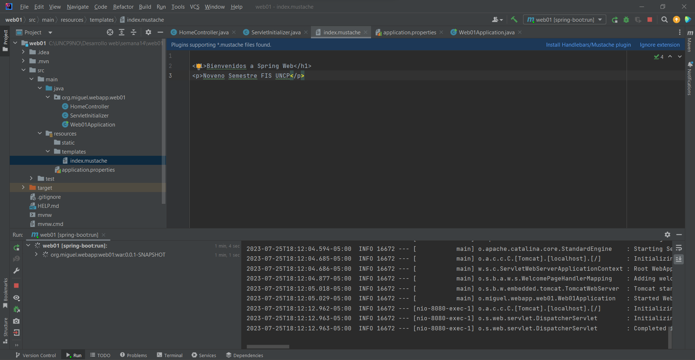
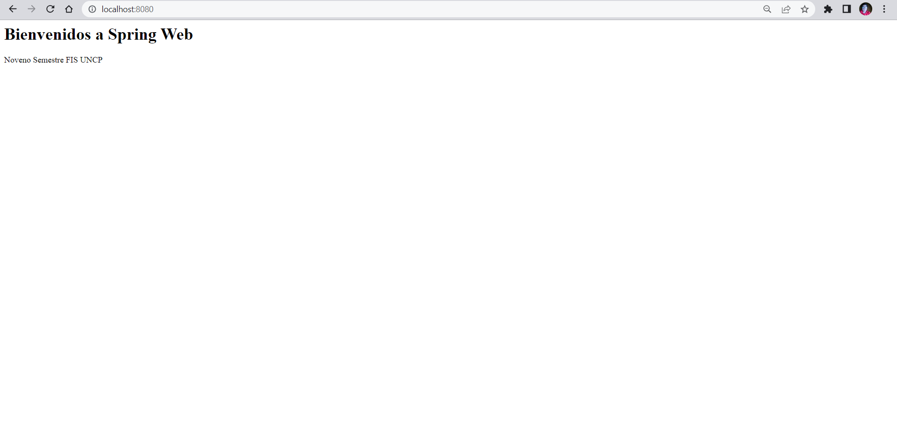

Portafolio
Bienvenida e Introducción
Tabla de contenido
Información sobre mí
Semana 13
Creando una página web en Tom Cat
TOM CAT- JAVA
Trabajo de laboratorio
Formulario
Creación de una página web, usando tomcat y JAVA.
Trabajo de laboratorio
Creación de una página web, usando TomCat y JAVA

